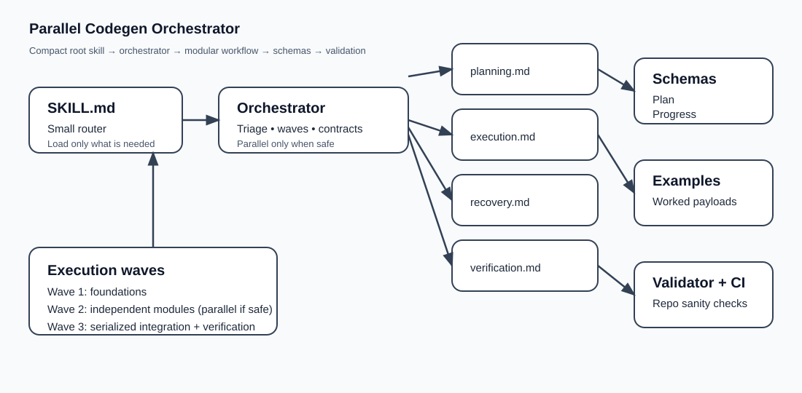

Parallel Codegen Orchestrator
A portable agent skill for planning, resuming, verifying, and safely parallelizing substantial code work. The repository is built around progressive disclosure, structured contracts, and truthful recovery anchors.
Start with the compact root SKILL.md, then route into the orchestrator and
load only the core modules needed for the current task.
